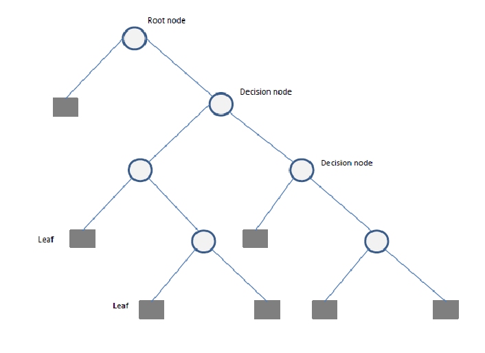

Machine Learning Specifications in R
A variety of options for classification and prediction
Introduction 
Machine learning (ML) is widely used in environmental science for tasks such as land cover classification, climate modeling, and forested distribution prediction. This lecture explores five common ML model specifications the tidymodels framework in R, applied to the forested dataset.
Linear Regression
Logistic Regression
Trees
- Decision Tree
- Random Forest
- Boost
- Decision Tree
Support Vector Machines
Neural Nets
Classification vs. Prediction
Most machine learning applications in environmental science serve different purposes (modes):
Classification Models → Categorize features into predefined classes.
Prediction Models → Forecast numerical environmental variables based on past trends.
Classification Models
Goal: Categorize phenomena into discrete classes.
Examples:
✅ Land Cover Classification (Forest, Urban, Water, Agriculture)
✅ Flood Risk Assessment (High, Medium, Low)
✅ Drought Severity Levels (No Drought, Moderate, Severe)
✅ Wildfire Prediction (Fire vs. No Fire)
✅ forested Identification (Bird forested, Plant Types)
Common Algorithms:
- Decision Trees
- Random Forest
- Support Vector Machines (SVM)
- Neural Networks (for remote sensing & image analysis)
- K-Nearest Neighbors (KNN)
Prediction Models
Goal: Estimate continuous environmental variables.
Examples:
üìà Streamflow Forecasting (Predict river discharge over time)
üå°Ô∏è Temperature Projections (Future temperature changes under climate scenarios)
☔ Precipitation Forecasting (Rainfall estimates for flood preparedness)
üìä Air Quality Index Prediction (Forecast pollution levels)
Common Algorithms:
- Linear & Multiple Regression
- Random Forest Regression
- Long Short-Term Memory (LSTM) Neural Networks (for time series forecasting)
Choosing the Right Model
Use classification if: You need to categorize environmental states (e.g., classifying land use changes).
Use prediction if: You need to forecast environmental conditions (e.g., predicting flood levels)
Use hybrid approaches if: You need to classify and predict (e.g., classifying drought severity and then predicting future water availability).
Model Selection Considerations
Choosing an ML algorithm (model) depends on:
Dataset Size: e.g. Large datasets benefit from ensemble methods like Random Forest and XGBoost.
Feature Complexity: e.g. SVM works well for high-dimensional data.
Interpretability Needs: e.g. Decision trees and LASSO regression provide intuitive insights.
Computation Constraints: e.g. GLM and Decision Trees are efficient compared to XGBoost.
Data: Variance, linearity, diminsionality
Load Required Libraries 

library(tidyverse)
library(tidymodels)
library(forested)
library(flextable)Data Preparation 
We will use the forested dataset for classification tasks. The dataset contains information about penguin forested, body measurements, and other environmental factors.
set.seed(123)
forested_split <- initial_split(forested, strata = tree_no_tree)
forested_train <- training(forested_split)
forested_test <- testing(forested_split)
forested_folds <- vfold_cv(forested_train, v = 10)
# Feature Engineering: Classification
forested_recipe <- recipe(forested ~ ., data = forested_train) |>
step_dummy(all_nominal_predictors()) |>
step_normalize(all_numeric_predictors()) |>
step_impute_mean(all_numeric_predictors())Machine Learning Specifications in tidymodels
Unified Interface for ML Models 
- The
parsnippackage is a part of thetidymodelsframework - It provides a consistent interface for specifying models through specifications
- The combination of a specification, mode, and engine is called a model
- Lets look at the parsnip documentation!
What are hyperparameters?
- Hyperparameters are settings that control the learning process of a model.
- They are set before training and affect the model’s performance.
- Hyperparameters can be tuned to optimize the model’s predictive power.
- More on model tuning next week!
1. Linear Regression
Linear regression is a fundamental statistical method used for modeling the relationship between a dependent variable and one or more independent variables. It is widely used in environmental science for tasks such as predicting forested distribution, estimating climate variables, and modeling ecosystem dynamics.
Components of Linear Regression
- Dependent Variable (Y): The variable to be predicted.
- Independent Variables (X): Features that influence the dependent variable.
- Regression Line: Represents the relationship between X and Y.
- Residuals: Differences between predicted and actual values.

Linear Regression in tidymodels
Specification
linear_reg()
#> Linear Regression Model Specification (regression)
#>
#> Computational engine: lmengines & modes
show_engines("linear_reg") |>
mutate(specification = "linear_reg") |>
flextable()engine | mode | specification |
|---|---|---|
lm | regression | linear_reg |
glm | regression | linear_reg |
glmnet | regression | linear_reg |
stan | regression | linear_reg |
spark | regression | linear_reg |
keras | regression | linear_reg |
brulee | regression | linear_reg |
quantreg | quantile regression | linear_reg |
Example 

lm_mod <- linear_reg(mode = "regression", engine = "lm")
workflow() |>
add_formula(elevation ~ .) |>
add_model(lm_mod) |>
fit_resamples(resample = forested_folds) |>
collect_metrics()
#> # A tibble: 2 × 6
#> .metric .estimator mean n std_err .config
#> <chr> <chr> <dbl> <int> <dbl> <chr>
#> 1 rmse standard 82.6 10 1.23 Preprocessor1_Model1
#> 2 rsq standard 0.971 10 0.000733 Preprocessor1_Model1Logistic Regression
Logistic Regression is used for binary classification tasks. It models the probability that an feature belongs to a category using the logistic (sigmoid) function. Unlike linear regression, which predicts continuous values, logistic regression predicts probabilities and applies a decision threshold to classify outcomes.
Why Use Logistic Regression?
Logistic Regression is widely used in machine learning due to its:
- Simplicity: Easy to implement and interpret.
- Efficiency: Computationally inexpensive, even on large datasets.
- Probabilistic Predictions: Outputs probabilities instead of hard classifications.
- Regularization Support: Extensions like L1 (Lasso) and L2 (Ridge) help prevent overfitting.
Components of Logistic Regression
- Sigmoid Function: Converts linear outputs into probabilities between 0 and 1.
- Decision Boundary: A threshold (often 0.5) determines classification.
- Log-Loss (Binary Cross-Entropy): Measures the error between predicted probabilities and actual labels.
- Regularization (L1 and L2): Helps in feature selection and prevents overfitting.

Variants of Logistic Regression
Binary Logistic Regression: Used when the target variable has two classes (e.g., forested vs. not).
Multinomial Logistic Regression: Extends logistic regression to multiple classes without assuming ordering.
Ordinal Logistic Regression: Handles multi-class classification where order matters (e.g., rating scales).
Building a Logistic Regression Model
Constructing a Logistic Regression Model involves:
- Defining feature (X) and target variable (y).
- Applying the sigmoid function to map predictions to probabilities.
- Using a loss function (log-loss) to optimize model weights.
- Updating weights iteratively via gradient descent.
Hyperparameters in Logistic Regression
- penalty: Type of regularization (L1, L2, or none).
- mixture: A number between zero and one giving the proportion of L1 regularization (i.e. lasso) in the model
Advantages and Disadvantages
Advantages:
- Simple and interpretable.
- Efficient on large datasets.
- Outputs probabilities for uncertainty estimation.
- Works well when data is linearly separable.
Disadvantages:
- Assumes a linear decision boundary.
- Sensitive to outliers.
- Can underperform on complex, non-linear data.
Logistic Regression in tidymodels
Specification
logistic_reg()
#> Logistic Regression Model Specification (classification)
#>
#> Computational engine: glmengines & modes
show_engines('logistic_reg') |>
mutate(specification = "logistic_reg") |>
flextable()engine | mode | specification |
|---|---|---|
glm | classification | logistic_reg |
glmnet | classification | logistic_reg |
LiblineaR | classification | logistic_reg |
spark | classification | logistic_reg |
keras | classification | logistic_reg |
stan | classification | logistic_reg |
brulee | classification | logistic_reg |
Example
log_model <- logistic_reg(penalty = .01) |>
set_engine("glmnet") |>
set_mode('classification')
workflow() |>
add_recipe(forested_recipe) |>
add_model(log_model) |>
fit_resamples(resample = forested_folds) |>
collect_metrics()
#> # A tibble: 3 × 6
#> .metric .estimator mean n std_err .config
#> <chr> <chr> <dbl> <int> <dbl> <chr>
#> 1 accuracy binary 0.893 10 0.00429 Preprocessor1_Model1
#> 2 brier_class binary 0.0786 10 0.00330 Preprocessor1_Model1
#> 3 roc_auc binary 0.958 10 0.00304 Preprocessor1_Model1Conclusion
Logistic Regression is a fundamental classification algorithm known for its simplicity and efficiency. It serves as a strong baseline model and is widely applied in domains like medical diagnosis, credit scoring, and fraud detection. With proper tuning and regularization, it remains a powerful tool in predictive modeling.
3. Decision Tree
A Decision Tree is a flowchart-like structure used for decision-making and predictive modeling. It consists of nodes representing decisions, branches indicating possible outcomes, and leaf nodes that represent final classifications or numerical outputs. Decision Trees are widely used in both classification and regression tasks.
Why Use Decision Trees?
Decision Trees are popular due to their: - Simplicity and Interpretability: Easy to understand and visualize. - Non-Linearity Handling: Can capture complex relationships in data. - Feature Importance: Helps in identifying the most influential features. - Minimal Data Preprocessing: Requires little to no feature scaling.
Components of a Decision Tree
- Root Node: The starting point representing the entire dataset.
- Decision Nodes: Intermediate nodes where a dataset is split based on a feature.
- Splitting: The process of dividing a node into sub-nodes based on a feature value.
- Pruning: The process of removing unnecessary branches to avoid overfitting.
- Leaf Nodes: The terminal nodes that provide the final output (class label or numerical prediction).

Building a Decision Tree
Constructing a Decision Tree involves:
- Selecting the best feature(s) to split the data.
- Splitting the data into subsets.
- Repeating this process recursively until stopping criteria (e.g., depth, minimum samples per leaf) are met.
- Pruning the tree if necessary to reduce overfitting.
Splitting Criteria
Several criteria can be used to determine the best split:
- Gini Impurity: Measures the impurity of a node, used in Classification and Regression Trees (CART).
- Entropy (Information Gain): Measures the randomness in a dataset.
- Mean Squared Error (MSE): Used for regression trees to minimize variance within nodes.
Hyperparameters in Decision Trees
Key hyperparameters include:
- cost_complexity: complexity parameter for pruning
- tree_depth: maximum depth of the tree
- min_n: minimum number of observations in a node
Advantages and Disadvantages
Advantages:
- Easy to interpret and explain.
- Can handle both numerical and categorical data.
- Requires minimal data preparation.
- Works well with missing values.
Disadvantages:
- Prone to overfitting, especially on small datasets.
- Can be unstable; small changes in data can lead to drastically different splits.
- Biased towards features with more levels.
Decision Tree using tidymodels
Specification
decision_tree()
#> Decision Tree Model Specification (unknown mode)
#>
#> Computational engine: rpartengines & modes
show_engines('decision_tree') |>
mutate(specification = "decision_tree") |>
flextable()engine | mode | specification |
|---|---|---|
rpart | classification | decision_tree |
rpart | regression | decision_tree |
C5.0 | classification | decision_tree |
spark | classification | decision_tree |
spark | regression | decision_tree |
Example
dt_model <- decision_tree(tree_depth = 10, min_n = 3) |>
set_engine("rpart") |>
set_mode('classification')
workflow() |>
add_recipe(forested_recipe) |>
add_model(dt_model) |>
fit_resamples(resample = forested_folds) |>
collect_metrics()
#> # A tibble: 3 × 6
#> .metric .estimator mean n std_err .config
#> <chr> <chr> <dbl> <int> <dbl> <chr>
#> 1 accuracy binary 0.891 10 0.00361 Preprocessor1_Model1
#> 2 brier_class binary 0.0911 10 0.00329 Preprocessor1_Model1
#> 3 roc_auc binary 0.911 10 0.00526 Preprocessor1_Model1Conclusion
Decision Trees are a powerful and interpretable tool for both classification and regression problems. While they have limitations, techniques like pruning and ensemble methods (e.g., Random Forests) can help mitigate their weaknesses. Understanding Decision Trees within the tidymodels framework makes them accessible for practical applications in environmental science.
4. Random Forest
Random Forests provide an ensemble learning method that constructs multiple decision trees and aggregates their predictions to improve accuracy and reduce overfitting. It is used for both classification and regression tasks.
Why Use Random Forest?
Random Forest offers several advantages: - Higher Accuracy: By combining multiple decision trees, it reduces variance and improves predictive performance. - Robustness to Overfitting: By averaging multiple trees, it mitigates the risk of overfitting. - Feature Importance Analysis: Helps identify the most influential features. - Handles Missing Data: Can work well with incomplete datasets.
Components of a Random Forest
- Multiple Decision Trees: The fundamental building blocks.
- Bootstrap Sampling: Randomly selects subsets of data to train each tree.
- Feature Subsetting: Uses a random subset of features at each split to improve diversity among trees.
- Aggregation (Bagging): Combines the outputs of individual trees through voting (classification) or averaging (regression).

Building a Random Forest
Constructing a Random Forest involves:
- Creating multiple bootstrap samples from the dataset.
- Training a decision tree on each bootstrap sample using a random subset of features.
- Aggregating predictions from all trees to produce the final output.
Hyperparameters in Random Forest
- Number of Trees (
ntree): Determines how many trees are included in the forest. - Maximum Depth (
max_depth): Limits the depth of individual trees to prevent overfitting. - Minimum Samples per Leaf (
min_n): Specifies the minimum number of observations required in a leaf node. - Number of Features (
mtry): Controls how many features are randomly selected at each split.
Advantages and Disadvantages
Advantages:
- Handles large datasets with high-dimensional feature spaces.
- Reduces overfitting by averaging multiple decision trees.
- Works well with both categorical and numerical data.
- Provides built-in feature selection.
Disadvantages:
- Requires more computational resources than a single decision tree.
- Less interpretable than a single decision tree.
- Can be slower to make predictions due to ensemble averaging.
Random Forest Implementation using Tidymodels
Specification
rand_forest()
#> Random Forest Model Specification (unknown mode)
#>
#> Computational engine: rangerengines & modes
show_engines('rand_forest') |>
mutate(specification = "rand_forest") |>
flextable()engine | mode | specification |
|---|---|---|
ranger | classification | rand_forest |
ranger | regression | rand_forest |
randomForest | classification | rand_forest |
randomForest | regression | rand_forest |
spark | classification | rand_forest |
spark | regression | rand_forest |
Example
# Define a Random Forest model
rf_model <- rand_forest(trees = 10) |>
set_engine("ranger", importance = "impurity") |>
set_mode("classification")
workflow() |>
add_recipe(forested_recipe) |>
add_model(rf_model) |>
fit_resamples(resample = forested_folds) |>
collect_metrics()
#> # A tibble: 3 × 6
#> .metric .estimator mean n std_err .config
#> <chr> <chr> <dbl> <int> <dbl> <chr>
#> 1 accuracy binary 0.909 10 0.00386 Preprocessor1_Model1
#> 2 brier_class binary 0.0677 10 0.00232 Preprocessor1_Model1
#> 3 roc_auc binary 0.964 10 0.00213 Preprocessor1_Model1Conclusion
Random Forest is a powerful ensemble learning method that improves upon decision trees by reducing overfitting and increasing accuracy. By leveraging the tidymodels framework in R, it can be effectively applied to various environmental science problems.
Boosting Machines
Boosting is an ensemble learning technique that builds multiple weak models (often decision trees) sequentially, with each model correcting the errors of its predecessor. This iterative process improves predictive accuracy and reduces bias, making boosting one of the most powerful machine learning methods. Popular implementations include Gradient Boosting Machines (GBM), XGBoost (Extreme Gradient Boosting), LightGBM, and CatBoost.
Why Use Boosting Machines?
XGBoost is widely used in machine learning due to its: - High Accuracy: Often outperforms other algorithms in predictive tasks. - Efficiency: Optimized for speed and parallel processing. - Feature Importance: Provides insights into which features influence predictions. - Robustness to Overfitting: Uses regularization techniques to enhance generalization.
Components of Gradient Boosting
- Weak Learners: Typically small decision trees (stumps).
- Gradient Descent Optimization: Each tree corrects the residual errors of the previous trees.
- Learning Rate (
eta): Controls the contribution of each tree to the final prediction. - Regularization (
lambdaandalpha): Penalizes complex trees to prevent overfitting.
Popular Boosting Algorithms
Gradient Boosting Machines (GBM): A general boosting method that minimizes loss using gradient descent.
XGBoost (Extreme Gradient Boosting): An optimized version of GBM that is computationally efficient and includes regularization.
LightGBM: Designed for efficiency on large datasets by using histogram-based learning and reducing memory usage.
CatBoost: Specialized for categorical data, using ordered boosting and permutation techniques to reduce bias.
Building an XGBoost Model
The process involves:
- Initializing predictions with a simple model (e.g., the mean for regression).
- Computing the residual errors.
- Training a new tree to predict these residuals.
- Updating the predictions by adding a fraction of the new tree’s output.
- Repeating until a stopping criterion is met (e.g., a maximum number of trees or performance threshold).
Hyperparameters in XGBoost
nrounds(Number of Trees): The number of boosting iterations.max_depth: The maximum depth of trees.eta(Learning Rate): Controls how much each tree contributes to the model.gamma: Minimum loss reduction required to split a node.colsample_bytree: Fraction of features to consider for each tree.
Advantages and Disadvantages
Advantages:
- Handles large datasets efficiently.
- Reduces bias and variance compared to single decision trees.
- Provides feature importance analysis.
- Can be used for both classification and regression.
Disadvantages:
- More complex and harder to interpret than a single decision tree.
- Requires tuning of hyperparameters for optimal performance.
- Can overfit if not properly regularized.
Boost Implementation using Tidymodels
# Define an XGBoost model
b_model <- boost_tree() |>
set_engine("xgboost") |>
set_mode("classification")
workflow() |>
add_recipe(forested_recipe) |>
add_model(b_model) |>
fit_resamples(resample = forested_folds) |>
collect_metrics()
#> # A tibble: 3 × 6
#> .metric .estimator mean n std_err .config
#> <chr> <chr> <dbl> <int> <dbl> <chr>
#> 1 accuracy binary 0.909 10 0.00461 Preprocessor1_Model1
#> 2 brier_class binary 0.0657 10 0.00259 Preprocessor1_Model1
#> 3 roc_auc binary 0.969 10 0.00197 Preprocessor1_Model1Conclusion
XGBoost is a powerful ensemble learning method that significantly improves predictive accuracy while mitigating overfitting. By leveraging tidymodels in R, environmental scientists can apply XGBoost to various challenges such as climate modeling, pollution forecasting, and disaster risk assessment.
Support Vector Machine (SVM)
Support Vector Machines (SVM) is a supervised learning algorithm used for classification and regression tasks. It works by finding the optimal hyperplane that best separates data points into different classes.
2. Why Use SVM?
SVM is widely used in machine learning due to its:
- Effective for High-Dimensional Data: Works well with datasets with many features.
- Robustness to Overfitting: Uses regularization techniques to prevent overfitting.
- Versatility: Can be applied to linear and non-linear classification tasks using different kernel functions.
- Support for Small Datasets: Works well when the number of samples is limited.
3. Components of SVM
- Support Vectors: Data points that define the hyperplane.
- Margin: The distance between the hyperplane and the nearest support vectors.
- Kernel Functions: Transform data to a higher dimension to make it separable.
Building an SVM Model
The process involves:
- Selecting an appropriate kernel function (linear, polynomial, radial basis function, etc.).
- Finding the hyperplane that best separates the data.
- Maximizing the margin between the hyperplane and the closest points.
- Using a regularization parameter (
C) to control trade-offs between a wider margin and misclassifications.
Hyperparameters in SVM
Key hyperparameters include:
- C (Regularization Parameter): Controls the trade-off between maximizing margin and minimizing classification error.
- kernel: Determines the transformation of input space (e.g., linear, radial basis function (RBF), polynomial).
- gamma: Controls the influence of individual training
Advantages and Disadvantages
Advantages:
- Works well with small to medium-sized datasets.
- Effective for both linear and non-linear classification.
- Handles high-dimensional spaces well.
Disadvantages:
- Computationally expensive for large datasets.
- Requires careful tuning of hyperparameters.
- Not as interpretable as decision trees.
SVM Implementation using Tidymodels
# Define an SVM model
svm_model <- svm_poly() |>
set_engine("kernlab") |>
set_mode("classification")
workflow() |>
add_recipe(forested_recipe) |>
add_model(svm_model) |>
fit_resamples(resample = forested_folds) |>
collect_metrics()
#> # A tibble: 3 × 6
#> .metric .estimator mean n std_err .config
#> <chr> <chr> <dbl> <int> <dbl> <chr>
#> 1 accuracy binary 0.905 10 0.00421 Preprocessor1_Model1
#> 2 brier_class binary 0.0744 10 0.00320 Preprocessor1_Model1
#> 3 roc_auc binary 0.956 10 0.00293 Preprocessor1_Model1Conclusion
Support Vector Machines (SVM) is a powerful algorithm for classification and regression tasks, especially when working with high-dimensional datasets. By leveraging tidymodels in R, environmental scientists can apply SVM to various challenges such as land cover classification, pollution prediction, and climate modeling.
Neural Networks
A Neural Network is a computational model inspired by the structure of the human brain. It consists of layers of interconnected neurons that transform input data to learn patterns and make predictions. Neural Networks are widely used for tasks such as image recognition, natural language processing, and time series forecasting.
Why Use Neural Networks?
Neural Networks are popular due to their:
- Ability to Model Complex Patterns: Can capture intricate relationships in data.
- Scalability: Performs well with large datasets.
- Feature Learning: Automatically extracts relevant features from raw data.
- Generalization: Can adapt to different types of data with proper training.
Components of a Neural Network
Neurons: The fundamental units that receive, process, and transmit information.
Input Layer: The initial layer that receives raw data.
Hidden Layers: Intermediate layers where computations occur to learn features.
Output Layer: Produces the final prediction or classification.
Weights & Biases: Parameters that are optimized during training.
Activation Functions: Functions like ReLU, Sigmoid, and Softmax that introduce non-linearity.

Training a Neural Network
The training process involves:
- Forward Propagation: Inputs pass through the network, producing an output.
- Loss Calculation: The difference between predicted and actual values is measured.
- Backpropagation: Errors are propagated backward to update weights.
- Optimization: Gradient descent (or its variants) adjusts weights to minimize loss.
- Iteration: The process repeats over multiple epochs until convergence.
Hyperparameters in Neural Networks
- hidden_units: Number of neurons in hidden layers.
- penalty: Regularization term to prevent overfitting.
- dropout: Fraction of neurons randomly dropped during training.
- epochs: Number of training iterations.
- activation: Activation function for neurons (e.g., ReLU, Sigmoid).
- learn_rate: Step size for weight updates.
Advantages and Disadvantages
Advantages:
- Can model complex, non-linear relationships.
- Works well with high-dimensional data.
- Automatically extracts features from data.
Disadvantages:
- Requires large datasets for effective training.
- Computationally expensive.
- Difficult to interpret compared to simpler models like Decision Trees.
Varients of Neural Networks
mlp() → Generic MLP model (uses “nnet”, “keras”, or “brulee” as an engine).
bag_mlp() → Bagged MLP model using “nnet” (reduces variance).
brulee::mlp() → MLP model using torch via brulee (more scalable and flexible).
Which one you choose depends on your dataset size, computational resources, and need for ensembling. If you need better scalability, brulee::mlp() is likely a better choice. If you want a quick MLP with some regularization, mlp() with “nnet” or “keras” works. If variance reduction is a concern, bag_mlp() is a solid option.
Neural Network Implementation
mlp() defines a multilayer perceptron model (a.k.a. a single layer, feed-forward neural network). This function can fit classification and regression models.
Specification
mlp()
#> Single Layer Neural Network Model Specification (unknown mode)
#>
#> Computational engine: nnetengines & modes
show_engines("mlp") |>
mutate(specification = "mlp") |>
flextable()engine | mode | specification |
|---|---|---|
keras | classification | mlp |
keras | regression | mlp |
nnet | classification | mlp |
nnet | regression | mlp |
brulee | classification | mlp |
brulee | regression | mlp |
brulee_two_layer | classification | mlp |
brulee_two_layer | regression | mlp |
Example
nn_model <- mlp(hidden_units = 5, penalty = 0.01) |>
set_engine("nnet") |>
set_mode("classification")
workflow() |>
add_recipe(forested_recipe) |>
add_model(nn_model) |>
fit_resamples(resample = forested_folds) |>
collect_metrics()
#> # A tibble: 3 × 6
#> .metric .estimator mean n std_err .config
#> <chr> <chr> <dbl> <int> <dbl> <chr>
#> 1 accuracy binary 0.908 10 0.00462 Preprocessor1_Model1
#> 2 brier_class binary 0.118 10 0.00139 Preprocessor1_Model1
#> 3 roc_auc binary 0.965 10 0.00211 Preprocessor1_Model1Conclusion
Neural Networks are a powerful tool for solving complex problems in various domains. While they require significant computational resources, proper training and regularization techniques can make them highly effective for predictive modeling. Understanding Neural Networks within the torch framework allows for practical applications in data science and environmental modeling.
Wrap up
Lets combine all the models and evaluate their performance using cross-validation.
We learned about cross-validation last Monday and its importance in evaluating model performance.
We will use a workflow set (seen last Wednesday) to fit multiple models at once and compare their performance.
Remember, we have not implmented any hyperparameter tuning yet, so these are just base models.
forested_folds <- vfold_cv(forested_train, v = 10)
wf <- workflow_set(list(forested_recipe),
list(log_model,
dt_model,
rf_model,
b_model,
svm_model,
nn_model)) |>
workflow_map('fit_resamples', resamples = forested_folds)Model Performance Comparision
autoplot(wf) +
theme_linedraw(18) +
theme(legend.position = 'bottom')
Model Evaluation
Understanding the boost model provided the best performance out of the box we can (1) select that model (2)
final_fit <- workflow() |>
add_recipe(forested_recipe) |>
# Selected Model
add_model(b_model) |>
# Trained with full training dataset
fit(data = forested_train) |>
# Validated against hold out data
augment(new_data = forested_test)
# Final Results!
metrics(final_fit, truth = forested, estimate = .pred_class)
#> # A tibble: 2 × 3
#> .metric .estimator .estimate
#> <chr> <chr> <dbl>
#> 1 accuracy binary 0.917
#> 2 kap binary 0.833
conf_mat(final_fit, truth = forested, estimate = .pred_class)
#> Truth
#> Prediction Yes No
#> Yes 910 86
#> No 61 720The whole game - status update

Assignment
Read the following article on machine learning model selection
Review the tidymodels documentation and explore the different models available in the
parsnippackage.In a few sentences (submit to Canvas) describe why you thin the XGboost model worked best for our problem